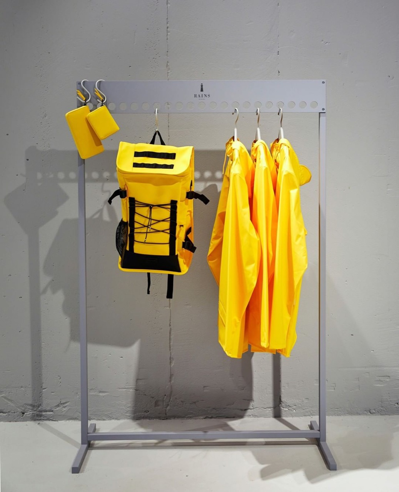

Printmaking encompasses diverse techniques including etching, engraving, lithography, screen printing, and woodcut, permitting artists to create multiple impressions from prepared matrices or blocks. The tradition of printmaking reaches back centuries, with distinctive regional traditions developing across cultures. Contemporary printmakers continue employing traditional techniques while introducing innovations and engaging printmaking with contemporary art concerns. The multiplicity inherent in printmaking—creating multiple impressions from single matrix—distinguishes prints from unique artworks, generating different relationships between artist, object, and viewer. Contemporary printmaking encompasses fine art, commercial applications, and experimental practice, demonstrating the medium's continued vitality and artistic relevance.
You Can Sport This Fashion Brand Rain or Shine

Previous articleIllustrator Bodil Jane Deserves the Hype